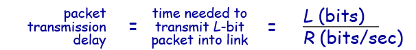
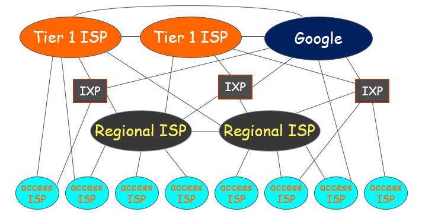
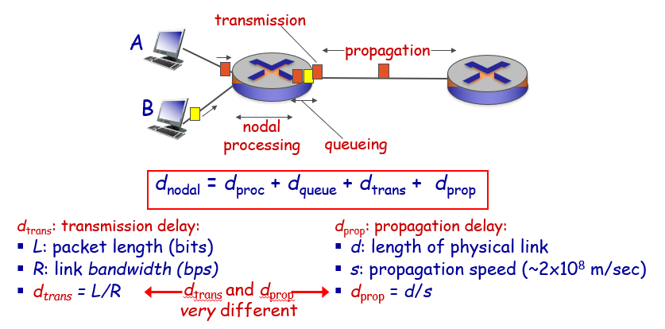
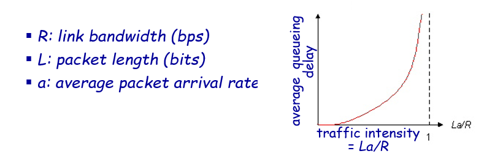
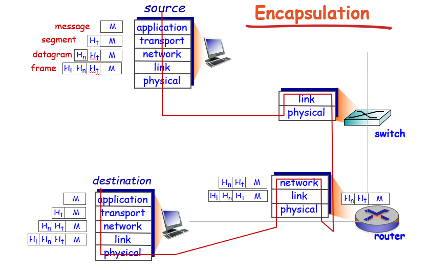

1.1 What is the Internet?
Introduction
“nuts and bolts” view
- billions of connected computing devices:
- hosts = end systems
- running network apps
- communication links
- fiber, copper, radio, satellite
- transmission rate: bandwidth
- packet switches: forward packets (chunks of data)
- routers and switches
- Internet: “network of networks”
- Interconnected ISPs
- protocols control sending, receiving of messages
- e.g., TCP, IP, HTTP, Skype, 802.11
- Internet standards
- RFC: Request for comments
- IETF: Internet Engineering Task Force
a service view
- infrastructure that provides services to applications
- Web, VoIP, email, games, e-commerce, social nets, AI, …
- provides programming interface to apps
- hooks that allow sending and receiving app programs to “connect” to Internet
- provides service options, analogous to postal service
protocol
protocols define format, order of messages sent and received among network entities, and actions taken on message transmission, receipt
1.2 network edge
Introduction
- network edge
- hosts: clients and servers
- servers often in data centers
- access networks, physical media: wired, wireless communication links
- network core:
- interconnected routers
- network of networks
Access network
- digital subscriber line (DSL)
use existing telephone line to central office DSLAM
- data over DSL phone line goes to Internet
- voice over DSL phone line goes to telephone net
- cable network
frequency division multiplexing: different channels transmitted
in different frequency bands
HFC: hybrid fiber coax
network of cable, fiber attaches homes to ISP router - home network and Ethernet
- Wireless access networks
Host: sends packets of data
- takes application message
- breaks into smaller chunks, known as packets, of length L bits
- transmits packet into access network at transmission rate R
- link transmission rate, aka link capacity, aka link bandwidth

1.3 network core
packet-switching
hosts break application-layer messages into packets
- forward packets from one router to the next, across links on path from source to destination
- each packet transmitted at full link capacity
store and forward
- takes L/R seconds to transmit (push out) L-bit packet into link at R bps
- store and forward: entire packet must arrive at router before it can be transmitted on next link
- end-end delay = 2L/R (assuming zero propagation delay)
queuing and loss
if arrival rate (in bits) to link exceeds transmission rate of link for a period of time:
- packets will queue, wait to be transmitted on link
- packets can be dropped (lost) if memory (buffer) fills up
Two key network-core functions
routing: determines source-destination route taken by packets
- routing algorithms
forwarding: move packets from router’s input to appropriate router output
circuit switching
end-end resources allocated to, reserved for “call” between source & dest:

Packet switching versus circuit switching
packet switching allows more users to use network!
great for bursty data
- resource sharing
- simpler, no call setup
excessive congestion possible: packet delay and loss
protocols needed for reliable data transfer, congestion control
Internet structure: network of networks
at center: small # of well-connected large networks
- “tier-1” commercial ISPs (e.g., Level 3, Sprint, AT&T, NTT), national & international coverage
- content provider network (e.g., Google): private network that connects it data centers to Internet, often bypassing tier-1, regional ISPs

1.4 delay, loss, throughput in networks
How do loss and delay occur
packets queue in router buffers
- packet arrival rate to link (temporarily) exceeds output link capacity
- packets queue, wait for turn
delay
Four sources of packet delay

- The transmission delay is the amount of time required for the router to push out the packet.
- The propagation delay is the time it takes a bit to propagate from one router to the next.
Queueing delay (revisited)

packet loss
- queue (aka buffer) preceding link in buffer has finite capacity
- packet arriving to full queue dropped (aka lost)
- lost packet may be retransmitted by previous node, by source end system, or not at all
Throughput
throughput: rate (bits/time unit) at which bits transferred between sender/receiver
- instantaneous: rate at given point in time
- average: rate over longer period of time
1.5 protocol layers, service models
- application: supporting network applications
- FTP, SMTP, HTTP
- transport: process-process data transfer
- TCP, UDP
- network: routing of datagrams from source to destination
- IP, routing protocols
- link: data transfer between neighboring network elements
- Ethernet, 802.111 (WiFi), PPP
- physical: bits “on the wire”

最后更新： 2019年06月08日 23:04
原始链接： http://vor.ink/2019/06/05/%E8%AE%A1%E7%BD%91%E5%A4%8D%E4%B9%A0%EF%BC%9AChapter%201%20Introduction/